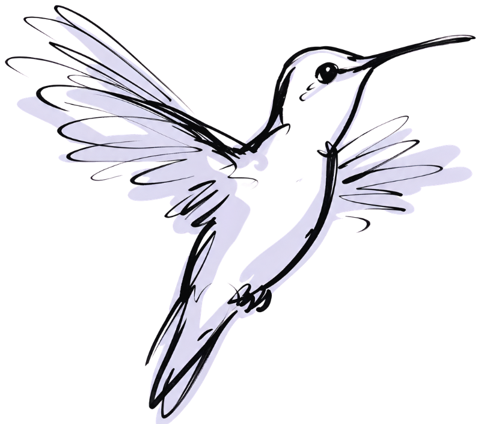
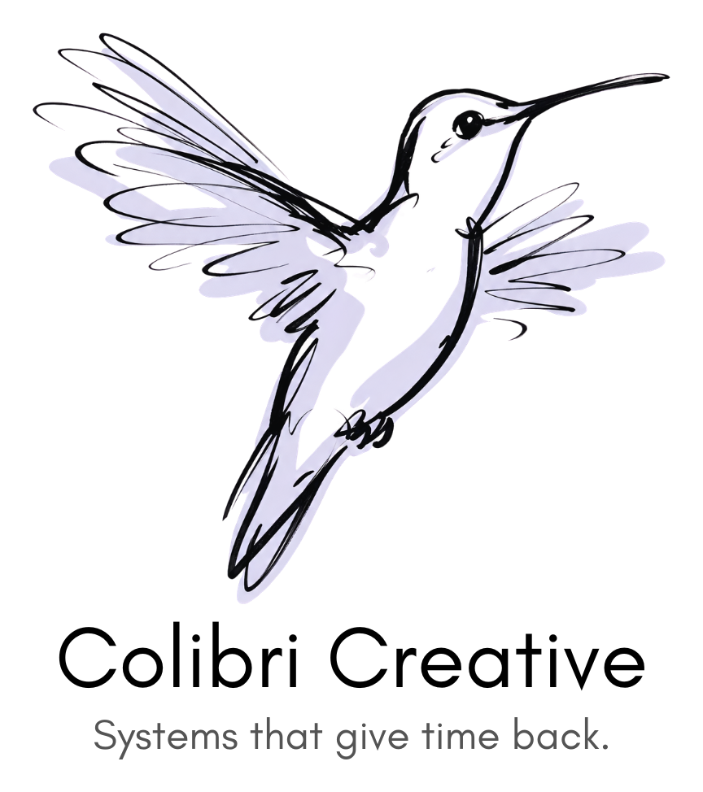
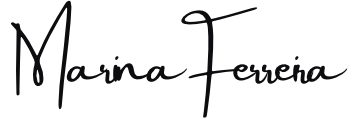

Law firms serving underserved clients
Intake, websites, and knowledge systems that help clients find you, in their own language.

I help organizations that serve underrepresented communities get found, run well, and spend their hours on people, not process.

Turning scattered processes into connected systems, with technology only as far as “enough.”
I build for teams whose work is measured in people helped, not clicks.
Intake, websites, and knowledge systems that help clients find you, in their own language.
Workflows that free small staffs from repeat admin so time goes back to clients.
Digital presence and operations built to be run by the team, not by a consultant.
I'm also open to joining a team full-time that shares this work.

01 · Boutique law firm serving underserved clients · Jul 2026–present
A firm with the expertise and the mission, but no front door. As its sole operations partner, I'm taking its digital presence from concept to launch, and building it so the firm can run it without me.
In progress
02 · Next
If your team serves people who are hard to reach, and your hours are going to process instead of to them, I'd like to hear about it.
Start a conversationThree habits, one way of working. I start with where the time goes, build so the work doesn't depend on me, and bring in technology only as far as it's needed.
I trace each process back to the people and hours it consumes, so a team can see the system it's actually running.
I connect people, signals, and tools so the system is trusted by the team, and so it still works the day I leave.
AI and automation where they return real hours, never where they add risk or hide decisions from the people accountable for them.
Colibri is the word for hummingbird in Portuguese, my first language. Hummingbirds live only in the Americas, and so does my story: from Brazil to New Jersey, working across Portuguese, English, and Spanish.
They're small, and the systems around them depend on them. Moving from flower to flower, a hummingbird carries what one part of the system needs to the next. That's the work I love: connecting legal, creative, operations, and clients so nothing gets lost in between.
And they know exactly how much energy they have. A hummingbird spends it with precision and rests to save it. I build the same way: every hour a system takes should give more hours back, and no team should need more technology than is enough.
“I see systems as people's time in motion.”
I've spent my career as the person translating between creative, legal, operations, and the people a team is trying to reach, across three languages. I'm drawn to the dates, approvals, and small details that keep work from slipping, and to building systems a team can trust without me in the room.
Now I'm putting that to work for organizations that serve communities too often left out. Through Colibri Creative, or in-house with a team that shares the mission, the work is the same: give people their time back.

Português · English · Español
LinkedIn06 / Start a conversation
Whether you're a firm, a nonprofit, or a team hiring for this work, I'd like to hear what's taking your hours.
Book a consultation
Prefer a new tab? Open Calendly